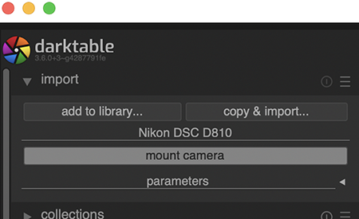
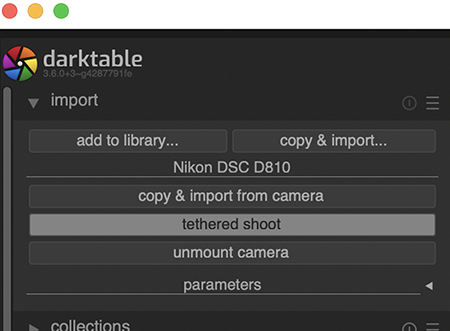
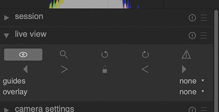
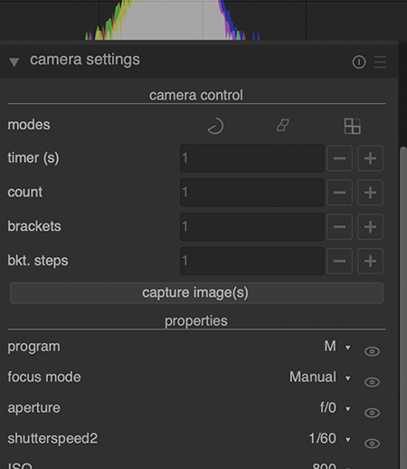
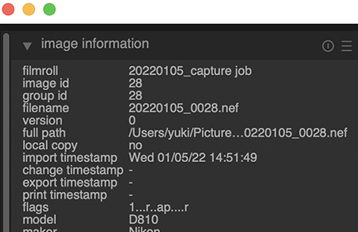

Tethering/テザリング撮影
(update 2022.5)
PC is not required, but it is convenient to connect with the camera. It allows focusing and checking images while imaging. It is possible to save time by transferring images while block-face imaging, rather than transferring them all at once after imaging. If your camera is capable of USB power supply, the computer can supply the power. (USB power supply allows you to take pictures while using USB as a power source. On the other hand, with USB charging, you cannot take pictures while charging.)Preparations include a tethering application and a USB cable.
パソコンは、必須ではありませんが、カメラにつなげて撮影すると便利です。フォーカス合わせや、撮影中の画像確認ができるようになります。切片を採取したときに、対応するブロック面画像のファイル名を確認できます。撮影中に画像を転送すれば、撮影後に一括転送するよりも、時間を節約できます。USB給電できるカメラであれば、パソコンから電源を供給できます。（USB給電では、USBを電源としながら撮影ができます。一方、USB充電では、充電中の撮影ができません。）準備するものは、テザリングアプリとUSBケーブルです。（注：CoMBIの場合、シャッター操作は、センサーとマイコンが行い、パソコンではないので、厳密にはテザリング撮影ではありません）
Applications
Official apps:
- Sony Imagigng Edge (Freeware)
- Nikon NX tether (2021.11-, Freeware, for recent mirrorless models)
- Nikon Camera Control Pro 2 (¥18,668, for conventional digital single-lens reflex models)
- Canon EOS Utility (Freeware)
- Fujifilm X Aquire (Freeware)
Alternative apps for Nikon DSLR models:
- Darktable (Freeware, Win/Mac/Linux. RAW development app including tethering function)
- Digicam Control (Freeware, only for Windows, tethering and sending data automatically),
- Image Capture (macOS preinstalled app, no tethering function, only for checking file name and sending images manually).
基本的に、各社の純正アプリでテザリング撮影できます。例外は、ニコンの古いモデル（一眼レフモデル）の場合です。一眼レフ用のニコン純正テザリングアプリは有料です。ニコン一眼レフで無料テザリングするアプリもあって、下にDarktableを紹介します。
USB Cable
I recommend using a USB3 cable or faster(5-40Gb/sec) . The transfer time is critical for smooth serial imaging. USB3 or more is essential for quick opereation with a manual handle. Prices range from 1000 yen (short and slow, 1m, 5Gb/sec) to 10000 yen (long and fast, 2m, 40Gb/sec). The transfer speed also depends on the USB spec of the camera body (usually up to 5Gb/sec, 2021, or occasionally up to 10Gb/sec, 2022.), so a 5Gb/sec USB cable should be sufficient.
Recommended USB type C cables in 2022. Longer is convenient for the laboratory use. Higher price, more flexible cable.
- Belkin: TB4, 2m, 40Gbps, 100W, 8K, Type-C, 7000 yen (very flexible)
- Cable Matters: TB4, 2m, 40Gbps, 100W, 8K, Type-C, 6000 yen (flexible)
- Amazon Basics: USB3.1.1 10Gbps 1600 yen (not so flexible)
- Amazon Basics: USB3.1.1 5Gbps 1200 yen (not so flexible)
| Camera | PC | Cable spec. | Fullsize RAW 43MB | APS-C RAW 19MB | Test date |
|---|---|---|---|---|---|
| Sony a7RIII_5Gbps | MBP15_TB3 | Thunderbolt4-40Gbps | 0.6 sec | 0.3 sec | 2022 |
| Sony a7RIII_5Gbps | MBP15_TB3 | USB3.1-10Gbps | 0.6 sec | 0.3 sec | 2022 |
| Sony a7RIII_5Gbps | MBP15_TB3 | USB3.1-5Gbps | 0.6 sec | 0.3 sec | 2022 |
| Sony a7RIII_5Gbps | MBP15_TB3 | USB2-480Mbps | 1.0 sec | 0.5 sec | 2022 |
| Nikon D810_5Gbps | MBP13_USB3 | USB3.0-5Gbps | 2 sec | --- | 2017 |
| Nikon D810_5Gbps | MBP13_USB3 | USB2-480Mbps | 5 sec | --- | 2017 |
Table: Duration to transfer a RAW image to PC. Full-size RAW are 43MB（Sony a7RIII) and 42.9MB (Nikon D810). APS-C RAW is 19MB (Sony a7RIII)
USBケーブルは、USB3（5-40Gb/sec）以上をおすすめします。Nikon D810（2014-2017）の場合、USB3なら、約2秒で画像転送ができます。USB2（0.48Gb/sec）では5秒程度かかります。Sony a7RIII（2017-2022）の場合、0.6秒（TB4, USB3)、1秒（USB2）です。転送時間は、連続撮影の律速になります。とくに手回しハンドルで軽快に撮影したい場合は、USB3以上の速さが必須です。転送速度は、カメラ本体のUSB規格（たいてい5Gb/secまで、2021。まれに10Gb/sec, 2022）にも依存しますので、5-10Gb/secのUSBケーブルで十分です。長めの2mなら、1200円〜1600円です。
最近のThunderbolt4ケーブルは、価格が6000円〜7000円（2m）と高めです。カメラからの転送速度はUSB3と同じです。カメラ側の端子が律速になっています。高価なTB4のメリットとしては、他の目的に利用できたり、しなやかで扱いやすいということが挙げられます。予算に余裕があればTB4をおすすめします。
Bug in Sony Imaging Edge
(2022.5.18)
A bug exists when using Imaging Edge, the Sony's official app for tethering, with M1 mac, macOS Monterey. macOS Monterey allows to customize pointer color at System Preferences > Accessibility> Display> Pointer outline color, Pointer fill color. However, when using the Imaging Edge with the pointer color changed, the camera is temporarily recognized, but the connection is immediately disconnected. To avoid this bug, please use the pointer in its default colors (Reset button available). Changes in pointer size do not affect camera connection. There is no such bug on Intel mac.
Sonyのカメラを接続する公式アプリ「Imaging Edge」を「M1 mac, macOS Monterey」で使用すると、カメラの接続が切れるバグがあります。macOS Montereyになって、ポインターの色をカスタマイズできるようになりました。System Preferences > Accessibility> Display> Pointer outline color, Pointer fill colorで変更できます。しかしながら、ポインター色を変更した状態で、「Imaging Edge」を利用すると、カメラは一時的に認識されるものの、すぐに接続が解除されてしまいます。バグを回避するため、ポインターはデフォルトの配色（Resetボタンあり）のままで「Imaging Edge」を使ってください。ポインタの大きさ変更は、カメラ接続に影響しません。なお、Intel Macではこのような問題は起こりません。
Table: Connection between Sony a7RIII_2017 (firmware v3.10) and Apple's computers via Sony Imaging Edge v1.0.00.05240. I checked camera connection during following processes after data deletion and macOS re-install; Imaging Edge install, Other 30 apps install using installer, Apps via Homebrew, then custamize pointer. Finally, I confirmed the cause/condition of the bug.
| Computer | OS | Pointer Color | Camera Connection |
|---|---|---|---|
| MBP16_2021_M1 max | macOS 12.4 | default | OK |
| MBP16_2021_M1 max | macOS 12.4 | changed | disconnected |
| MBA13_2020_M1 | macOS 12.3 | default | OK |
| MBA13_2020_M1 | macOS 12.3 | changed | disconnected |
| MBP15_2018_Intel | macOS 12.4 | default | OK |
| MBP15_2018_Intel | macOS 12.4 | changed | OK |
| MBP15_2018_Intel | macOS 12.3 | default | OK |
| MBP15_2018_Intel | macOS 12.3 | changed | OK |
Darktable
Darktable is RAW developer, and also function as tethering application. Supported cameras are listed in gPhoto2 project site. I have checked the operation using Nikon D810. The stability of the application during serial imaging has not been fully verified, so please check it in each environment.The stablility also depends on the transfer speed of USB cable.
Darktableは無料のRAW現像アプリです。テザリング機能も備えています。gPhoto2プロジェクトにリストアップされている各社のカメラをサポートします。Nikon D810で動作確認できました。連続撮影時のアプリの安定性は確認していません。安定性は、USBケーブル転送規格にも依存するので各環境で確かめてください。Sony a7RIIIでは、マウントできましたが、テザリングできずアプリが落ちました(2021.12 Mac)。上記のポインタ色問題とも関係なく、落ちました(2022.5.18 M1max)。Windowsでは、パソコンはa7RIIIを認識しますが、Darktableがカメラをマウントできませんでした（2022.7 Windows)。以上より、Sonyの場合は、Sony純正Imaging Edgeをおすすめします。
How to use/使い方
-
Connect the camera and PC using the USB cable. You will find
mount camerabutton in the left top of the window. If the camera is not recognized, try connecting and disconnecting several times.
-
Click
mount camera. Thentethering shootappears. Click it.
-
Live view is available by clicking
eye mark.
-
Camera settings are adjustable in the right of the window.

-
Image propaties can be checked in the left of the window. File name can be seen.

-
Image files are automatically transferred into (User)/Pictures/darktable/(date)_capture job/ as a dafault setting.